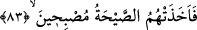
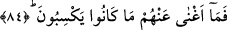

82. Onlar, dağlardan emniyet içinde kalacakları evler oyarlardı.
“Onlar, dağlardan,” güvenilir/sağlam olduğu için yıkılmaktan, hırsızların
girmesinden, düşmanların tahrîb etmesinden ya da aşırı gâfil olmaları hasebiyle
azâbdan ve çeşitli musîbetlerden “emniyet içinde kalacakları evler oyarlardı.” el-
Kâmûs’ta der ki: “el-Cebel, yeryüzünün büyük ve uzun kazıklarına denir.
‘Beyt’, bir taraftan girişinin üstü örtülmüş, gecelemek için inşâ edilmiş, dört veya üç
duvarı olan binâdır. ‘Dâr’ ise üzerinde binâ bulunması göz önüne alınmaksızın sâdece
arsaya denir.
83. Onları da sabaha çıkarlarken o korkunç ses yakaladı.
“Onları da sabaha çıkarlarken” Yâni, pazara rastlayan dördüncü günün sabahına
girerlerken, demektir. Sabah lâfzı kuşluk vaktine kadar uzanan zamana denir. Önceki üç
günden birincisinde kavmin yüzü sarardı, ikinci gün kızardı, üçüncü gün karardı. Üç
gün tamam olunca bozgunculuk istidâdında oldukları ve helâk edilmeye hak kazandıkları
kesinleşti. Böylece şakîlerin yüzlerinin sararması, saîdlerin yüzünün parlamasına
tekâbül etmiştir. Nitekim Allah Teâlâ: “O gün birtakım yüzler parlaktır” (Abese,
80/38) buyurmuştur. Yüzlerinin kızarmasına karşılık olarak da saîdler hakkında:
“güler” (Abese, 80/39) ifâdesi gelmiştir. Çünkü gülme, yüzün kızarmasına sebeb olan
şeylerdendir. Ancak saîdlerin gülüşü, gamzelerin kızarması demektir. Daha sonra
şakîlerin derisindeki siyahlaşmaya karşılık olarak da “sevinir.” ifâdesi vârid olmuştur.
Bu, sevincin saîdlerin yüzünde/derisinde bıraktığı bir iz olup tıpkı siyahlığın şakîlerin
yüzünde/derisinde iz bırakmasına benzer.
“O korkunç ses” Cebraîl’in korkunç sesi “yakaladı.” Cebrâil, onlara karşı tek bir
çığlık attı ve tamâmen helâk oldular. Bir rivâyete göre ise onlara gökten şimşeklerin
gürültülerinin ve yeryüzündeki her şeyin sesinin toplamına denk bir gürültü geldi ve
kalpleri göğüs boşluklarında paramparça oldu.
A’raf Sûresi’nde ‘onları recfe’ yâni zelzele ‘yakaladı’ buyurulur (el-A‘râf, 7/78).
Belki de bu zelzele, havanın şiddetle dalgalanmasını doğuran gürültünün
gereklerindendir. Ona sebeb olmuştur. Bu bakımdan ondan mecâz olmaktadır.
84. Kazanmakta oldukları şeyler onlardan hiçbir zararı savmadı.
Sağlam evler inşâ etmek, çok sayıda mala ve nüfûsa sâhip olmak gibi “kazanmakta